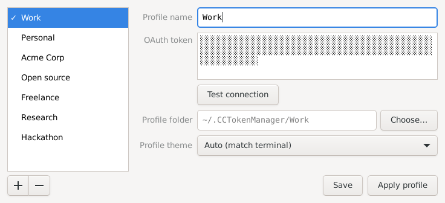

CC Token Manager
Switch Claude Code between multiple Claude accounts in one click.
Download for freemacOS · Windows · Linux

Work account, personal account, a client's team plan — Claude Code only knows one at a time. CC Token Manager keeps all your Claude accounts, Pro, Max or Team, and switches Claude Code between them in a click. No logging out and back in, no environment variables, no shell scripts.
Features
One click to switchPick a profile, press Apply profile, and every new
claude, in every terminal, runs on it.Each profile is its own worldIts own history, settings, memory, MCP servers and theme. Nothing leaks from one subscription into another.
Your tokens stay secretIn the macOS Keychain, Windows Credential Manager or the Linux keyring — never in a plain-text file.
Nothing to undoQuit the app and Claude Code is exactly as it was before.
Check before you switchTest connection makes sure a token works.
Stays out of the wayLives in the menu bar or tray and starts with your computer.
Getting started
- Get a token for each subscription: run
claude setup-tokenwhile signed in to it. - Open the app from its icon in the menu bar or tray.
- Add a profile. Press +, give the profile a name and paste its token.
- Apply it. Press Apply profile and start a new Claude Code session.
Download
| System | File |
|---|---|
| macOS 11 or later | .dmg |
| Windows 10 or 11 on x64, Windows 11 on Arm | -setup.exe |
| Linux on x64 | -linux-x64-setup |
| Linux on arm64 | -linux-arm64-setup |
All of them are on the releases page. How to install: README.